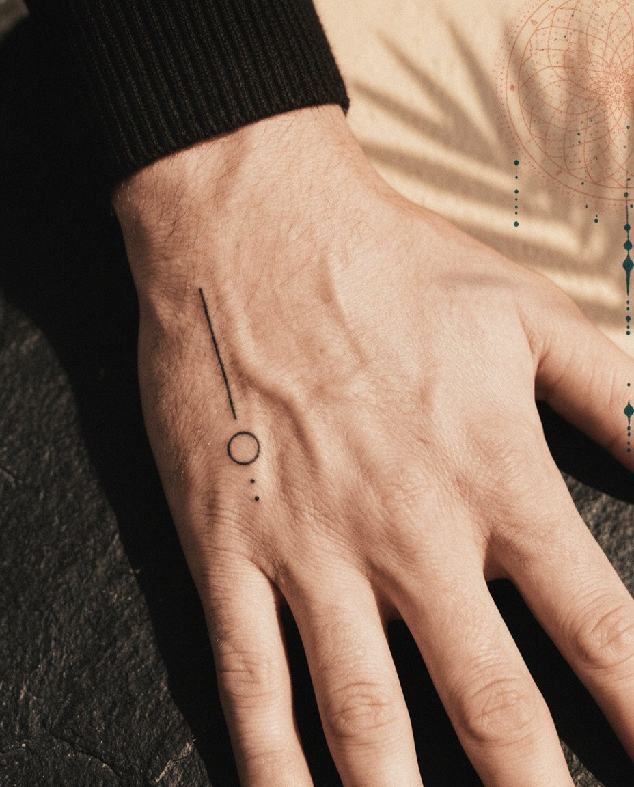
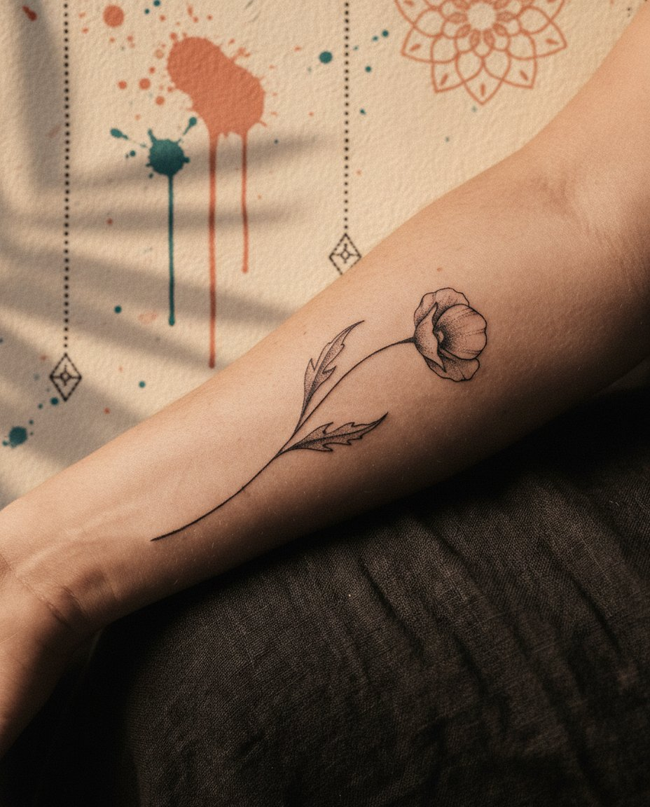
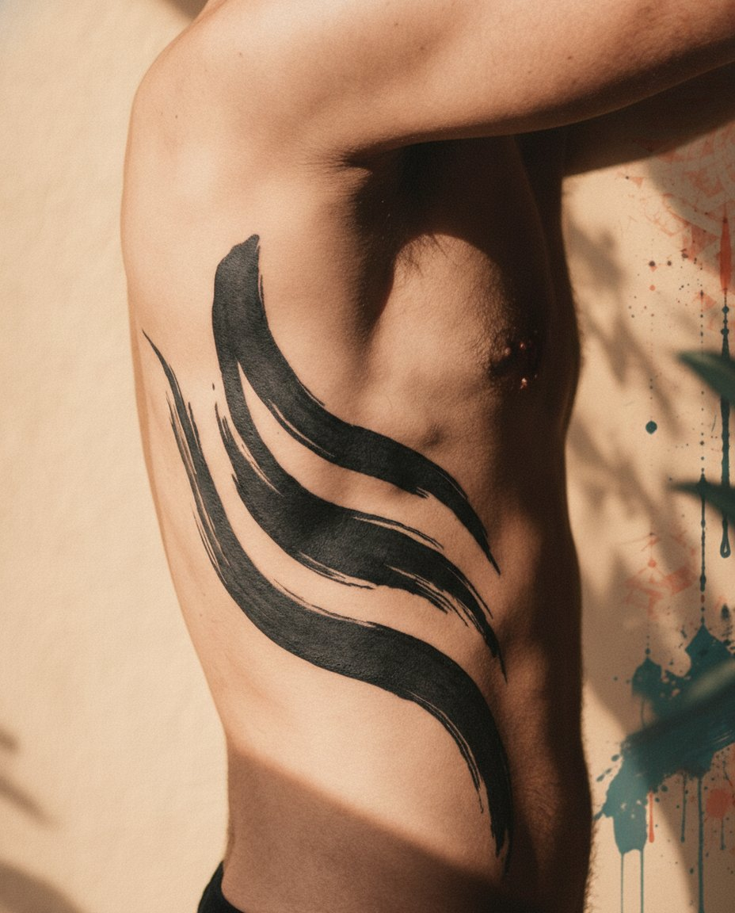
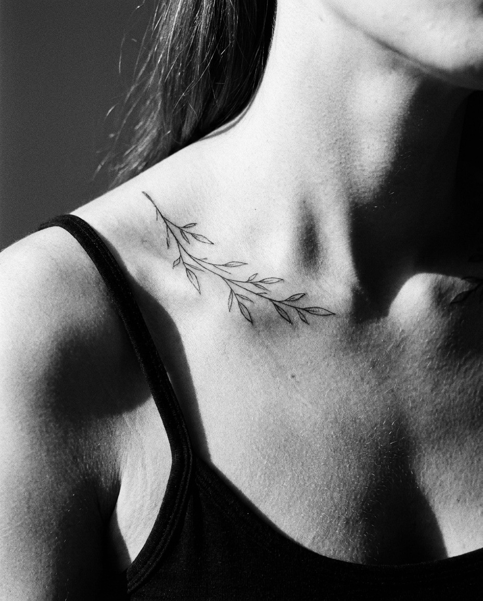
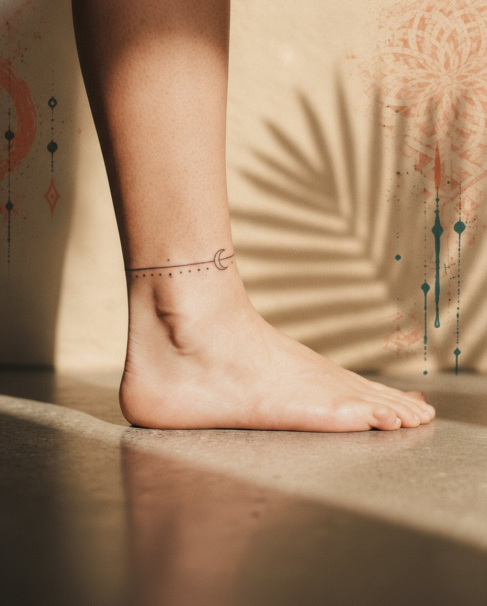
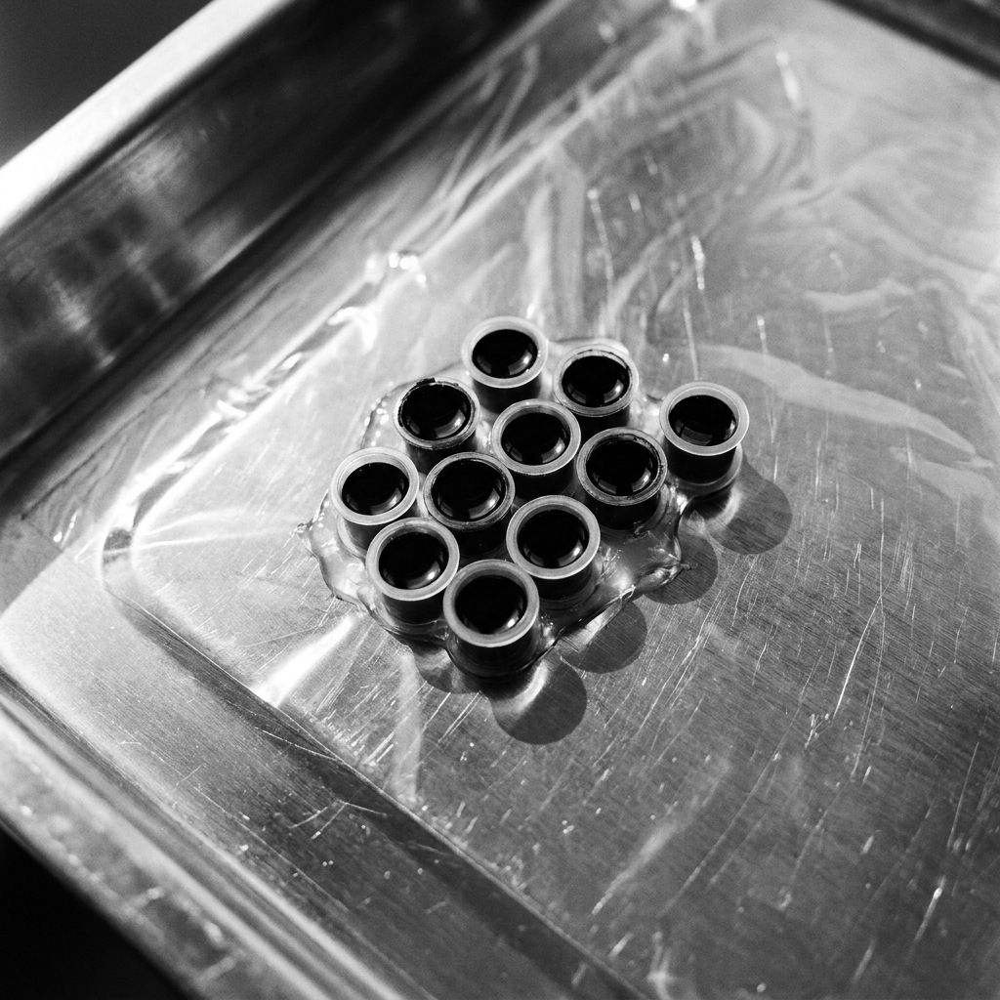

בעל הסטודיו · [התמחות]
[@instagram] לקביעת תור אצל אלירןפיין ליין, בוטני ודוטוורק אורנמנטלי. מצויר ביד ע״י אלירן ובוריס, בעיר העתיקה של באר שבע.
שנים רבות Jellyfish עבד בעיר העתיקה של באר שבע, והשם שלו עבר מפה לאוזן. עכשיו הוא חוזר לאותם רחובות: אותה יד, אותה הקפדה, ושפה חדשה של קו ונקודה.
מאחורי הכיסא עומד אלירן נונה, בעל הסטודיו. יותר מ-20 שנה הוא מקעקע, בארץ ובסטודיואים בחו״ל, ואלפי לקוחות יצאו אצלו עם קעקוע שהם שמחים להראות.

קו דק ומדויק, שמות, סימנים וצורות קטנות. מתוכנן לגודל שלא מיטשטש עם השנים.

פרחים, ענפים ועלים שזורמים עם קווי הגוף: עצם הבריח, האמה, הקרסול.

שחור מלא, משיכות זורמות וצל שבנוי מנקודות. ציר וסימטריה שעובדים עם הגוף.
קעקוע נבחן אחרי שהוא מחלים, לא ביום שעשו אותו. לכן אנחנו מראים את שניהם.
[תמונות המחשה. יוחלפו בעבודות של הסטודיו]



13 עיצובים חדשים, וכל אחד יקועקע פעם אחת בלבד.
הדף נחשף ב-1.11. [כאן ייכנסו 13 העיצובים]
מה הרעיון, איפה בגוף ובאיזה גודל בערך. תמונות השראה מתקבלות בשמחה.
תשובה עוד היום, בשעות הסטודיו. לעיצוב אישי מגיעה גם סקיצה ראשונה.
100 ₪ למיני, 200 ₪ לעיצוב אישי, בקישור תשלום. הקבלה נשלחת מיד, והמקדמה יורדת מהמחיר הסופי.
ביום התור את הסקיצה הסופית רואים יחד בסטודיו, ומדייקים אותה לפני שמתחילים.
וואטסאפ 052-5659677 · עונים עוד היום, בשעות הסטודיו. רוצים מיני? כתבו ״מיני״ ונשלח שעות פנויות.
קעקוע עדין עד 5 ס״מ מדף הפלאש של החודש, במחיר קבוע. בוחרים עיצוב מהדף, מגיעים ביום חמישי, והולכים הביתה עם קעקוע.
| מיני ג׳ליפישפלאש עד 5 ס״מ מדף החודש, בכל חמישי | 350 ₪ |
|---|---|
| מיני אישישם, תאריך או ראשי תיבות, עד 5 ס״מ | 400 ₪ |
| מיני לשניים2 תורים צמודים: לזוגות, לחברים, לאחים | מחיר מלאלכל אחד |
| קטן בעיצוב אישיעד כ-7 ס״מ | 450–750 ₪ |
| בינוניעד גודל כף יד | 750–1,500 ₪ |
| גדול, אורנמנטלי או פרויקטאחרי שיחת ייעוץ | לפי הצעה |
| פירסינגאצל יניב, לפי סוג ותכשיט | מ-[מחיר] ₪ |
| שובר מתנהנשלח באותו יום, עם קבלה | 350 / 500 / 1,000 ₪ |
10% הנחה לחיילים בסדיר ולמשרתי מילואים (לא על מיני ופלאש).
[המחירים והמדיניות הם הצעה מתוך המחקר. לאישור הבעלים, והנוסח הסופי אחרי עו״ד]
בעל הסטודיו · [התמחות]
[@instagram] לקביעת תור אצל אלירן
[התמחות]
[@instagram] לקביעת תור אצל בוריס
פירסינג · סוגים ומחירים
[@instagram] לקביעת פירסינג אצל יניבאותו סטודיו ואותה הקפדה על ניקיון, בתור משלו אצל יניב. בוחרים מקום ותכשיט, ומקבלים מחיר מראש.
| תנוךאוזן | מ-[מחיר] ₪ |
|---|---|
| הליקסאוזן, בחלק העליון | מ-[מחיר] ₪ |
| טראגוסאוזן | מ-[מחיר] ₪ |
| קונץ׳אוזן | מ-[מחיר] ₪ |
| נוסטרילאף | מ-[מחיר] ₪ |
| ספטוםאף | מ-[מחיר] ₪ |
| טבורגוף | מ-[מחיר] ₪ |
המחיר הסופי תלוי בתכשיט שבוחרים.
[הסוגים, המחירים, התכשיטים וכלל הגיל לאישור מול יניב]

[לאישור הבעלים: מה בדיוק נהוג בסטודיו]
[ציטוט מגוגל, בהסכמה בכתב]
[ציטוט מגוגל, בהסכמה בכתב]
[ציטוט מגוגל, בהסכמה בכתב]
[מ-20 ביקורות ומעלה: מספר הביקורות והממוצע בגוגל במקום הזה]
לגמרי. הרבה מהקעקועים שלנו הם הראשונים של מישהו. קטן ופשוט מקבל את אותו תכנון כמו שרוול: גודל, מיקום וקו שיחזיקו מעמד. בשביל זה יש מיני ג׳ליפיש בכל חמישי.
כל קו מתרחב קצת עם השנים. לכן אנחנו לא מקטינים מעבר למה שהעור מחזיק, ונגיד לכם אם עיצוב צריך להיות קצת יותר גדול כדי להישאר חד. קרם הגנה אחרי ההחלמה עושה את השאר.
כן. לעיצוב אישי מקבלים סקיצה לפני התור, ואת הסקיצה הסופית רואים יחד בסטודיו ומדייקים לפני שמתחילים. לא מתחילים בלי ״כן״ שלכם.
בטח. נתאים אותו לגודל, לקו ולמיקום, ונראה לכם לפני שמתחילים. עבודה של אמן אחר לא נעתיק אחד לאחד.
קצת. רוב האנשים מתארים שריטה חמה שחוזרת, ואחרי כמה דקות הגוף מתרגל. צלעות וכפות רגליים רגישות יותר, החלק החיצוני של הזרוע פחות. תגיעו אחרי ארוחה ושינה טובה, בלי אלכוהול 24 שעות לפני, ותגידו לנו כשצריך הפסקה.
השכבה העליונה מחלימה בדרך כלל תוך 2–4 שבועות. עד אז בלי ים, בריכה, ג׳קוזי ושמש ישירה. הים יחכה, מבטיחים. אחרי 3 שבועות שולחים לנו תמונה ונבדוק יחד. הוראות הטיפול המלאות
מגיל 18. נבקש תעודה מזהה בכל מקרה, גם אם אתם נראים בדיוק בגיל הנכון.
מקדמה של 100 ₪ למיני או 200 ₪ לעיצוב אישי שומרת לכם את התור. נשלחת עליה קבלה, והיא יורדת מהמחיר. ביטול או שינוי עד יומיים לפני (לא כולל שבת וחג): המקדמה חוזרת במלואה או עוברת לתור חדש. אחר כך היא לא חוזרת.
קעקוע נשאר. אז שווה לשרטט אותו טוב.
LAYER BY LAYERרעיון, מקום וגודל. נחזור אליכם עם הצעת מחיר עוד היום, בשעות הסטודיו.